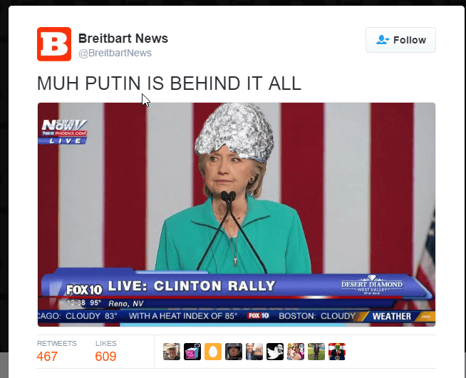

Libertas is a young bard traveling along the endless road to self-improvement and recounting his adventures. You can follow him on Twitter.


The current year was the gift that kept on giving when it comes to pulling back the curtain on the powers that be. What we’ve seen since Donald Trump’s win has basically been the five stages of grief. The denial phase came with the “not my president!” shrieks. Denial became anger when “not my president!” led to large protests. Then came the bargaining phase. The first act of this was the “recount 2016” extravaganza that was little more than a fundraising scam by Jill Stein. When that effort collapsed, the second attempt at bargaining came with what is quite possibly the most visceral episode of mass hysteria I’ve ever seen (and that’s saying a lot): the moral panic over “muh Russian hackers.”
The tales goes that “the Russians” were responsible for the releases of DNC and John Podesta’s emails. While “muh Russia” was used as a rhetorical device by the failed Hillary Clinton campaign for months prior to the election, the story picked up hysterical steam afterward. First came the Jeff Bezos’ blog’s (formerly the Washington Post) inflammatory post linking an aggregate of “fake news” sites to Russian propaganda… which was itself fake news.
When that effort flopped around the end of November, the next outrage came in the form of a story, again from Jeff Bezos’ blog, centering on reports that a “secret CIA assessment” had concluded that Russia had indeed interfered in the election in favor of Trump. This unleashed a firestorm that has essentially become a meme with a sort of reactive evolution.
First, there is no conclusive evidence (that we know of) that any agent of Russia “hacked” anything. All the buzz is based on hearsay and second-hand sources from entities that have routinely made mistakes, lie, and invented methods of propaganda to undermine the sovereignty of other nations.
In other words, we hear from anonymous “sources” that say such reports exist, but we don’t know who these people are or what the reports are, and these “sources” are from entities that have a checkered history. We in point of fact don’t even know for certain that these “sources” exist.
Wikileaks, which has never been found to release a false document, denies that they received any of the emails they released from Russia or any agent of the Russian government. Instead, it was purported to be a Democratic insider that was disgusted with what he saw. Such a scenario is typical in cases such as this.
We also know that John Podesta had his emails compromised because of a phishing link. This was not an incredibly sophisticated operation that would require the efforts of the Russian equivalent of the NSA to pull off. To his credit, President Obama admitted this. It could well have been that infamous “400 pound guy in the basement” that Donald Trump so memorably spoke about, given what we currently know.
Then things get stranger still. For instance, the FBI disagreed with the CIA’s as yet unseen “assessment,” the Office of the Director of National Intelligence did too, and then after the controversy went on for a few more days, suddenly the FBI and ODNI, according to Jeff Bezos’ blog, “agreed with the CIA’s assessment.”
Did I mention that Jeff Bezos’ blog is on record as having signed a $600 million contract with the CIA? Meanwhile, the CIA refuses to brief Congress with its purported assessment or any evidence of it, which even security hawks like Peter King find troubling.
And then there’s this one – according to Wikileaks, the “journalist” that channeled NBC’s claims about Putin’s personal involvement in the “hack” is none other than Ken Dilanian, who has an extensive relationship with the CIA and sent stories their way prior to publication (you’ll also note that various Jeff Bezos bloggers are also fingered).
None of these uncertainties stopped the fake news media from parroting the tenuous claim that Russia was behind the leaks. Notice also that the claims continue to get more hysterical. First the fake news media talked about Russia hacking the emails, but in recent days “hacked emails” quietly became “hacked the election.” This despite the fact that a federal judge in Pennsylvania threw out Jill Stein’s recount scam, stating at the very beginning of the opinion that there was no evidence of any breach of the integrity of the vote. President Obama and Attorney General Loretta Lynch are also on record as saying no evidence of any interference was found.
Consequently, when “hacked the election” began to lose some steam, Vladimir Putin suddenly became personally involved in the “hack.” This drove the hysteria even wilder. This is akin to what Thomas Sowell describes as being “verbal inflation.”
Ironically, there’s currently more evidence to support the assertion that Donald Trump was a DNC conspiracy rather than a Russian one, for a few reasons:
Of course, the “muh Russian hackers” serve as a convenient scapegoat for Hillary Clinton and her gang of losers to assuage their cognitive dissonance and explain their loss (“fake news” and FBI Director Comey are other popular vehicles), retaining the sacred mantra that “nothing is ever Hillary’s fault” and that there was no possible way she just could have been an incredibly terrible candidate, but that doesn’t excuse the irresponsibility of making these incendiary claims against a nuclear power without good evidence. Nor does that explain the deeper motivations potentially behind this hysteria.
Live footage of the Russian hackers in action.
When I see useless appendages like Mitch McConnell insisting that “Russia is not our friend,” I ask myself: “Why do these people want Russia to be our enemy so badly?” The United States and Russia, despite the pretensions of a foreign policy establishment that has led the American people into one boondoggle after another, do share some common interests. Among these are destroying ISIS, combating Islamist terrorism generally, preventing Iran from acquiring nuclear weapons, and containing a China that has been behaving increasingly badly on the world stage. It’s also just a good idea in general to have, if not friendly, cordial relations with a nuclear power if possible.
So what really is the purpose of all this hysteria?
For some with a mind for fantasy, this “invalidates the result” and the Electoral College should prevent Donald Trump from taking power. By the time this post is released, this hallucination will have evaporated.
There are other, more realistic ways to use this hysteria, however. First, it’s an obvious attempt to de-legitimize Donald Trump’s presidency. This will make his efforts at unifying the country and getting his agenda passed more difficult.
The second purpose is a bit less general but arguably more potent. A cloud will hang over anything Donald Trump’s administration does in relation to Russia, at least at first. This is happening right now with Donald Trump’s pick for Secretary of State, Rex Tillerson. We’re witnessing something that can only be described as mass onset paranoia as Tillerson’s detractors in both parties and in the fake news media are fixating on that one time he drank champagne with Vladimir Putin, ignoring all the other deals he made with other leaders and the context of the deal with Russia.
The Russia hysteria seems likely to be an advanced persuasion tactic at this point, one which originated from people who know what they’re doing. It has a ring of familiarity since it’s a tactic Trump uses often – that of setting anchors. I call this part of the domination of space strategy.

In essence you set the terms of the discussion so broad and so outrageous that you first, draw all attention, and second, have a wide leeway for maneuvering and negotiating to get what you want. You’ll note this pattern when the media wants you to be increasingly outraged by using the inflation method I described above.
By being so outrageous, the media and its handlers from more shadowy elements in the government have dominated space on the Russian issue. By setting the bar so high and so outrageous, they’ve pretty much become the only game in town on it, sucking all the oxygen out of the room. As such, it threatens to cast anything Donald Trump does in relation to Russia with a cloud of suspicion unless his actions perfectly tow the foreign policy establishment’s line, which may be what they were after all along.

The “muh Russia” episode, aside from being a delusional fantasy of social justice warriors and an outlet for their cognitive dissonance, may be telling us that Donald Trump’s promise of an “America first” foreign policy has seriously ruffled feathers in the swamp that is Washington, arguably even more than his positions on trade and immigration. We can only hope that this part of the swamp gets drained with heightened energy and vigilance. Because Donald Trump is himself a “master persuader,” it will be interesting to see how he counters this domination of space tactic.
Now, none of this means that the Russians didn’t engage in any hacking, and for insurance purposes in the age of online mobs, I now say that I don’t think Putin is necessarily a “good guy.” It is possible that all of the claims about Russian hacking are true – but the key point is that we need to see better evidence than what has been presented.